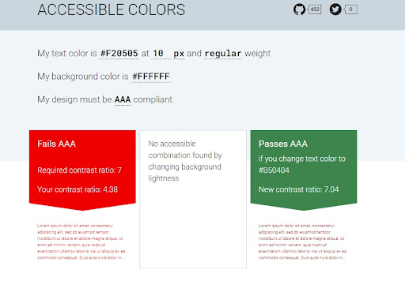
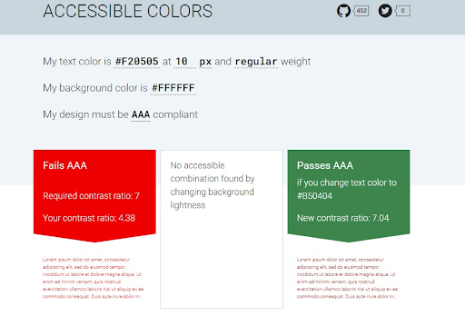

Twin Cities Recovery Project
Website Redesign
Website Redesign


The Twin Cities Recovery Project website is difficult to navigate, does not effectively communicate the vision of the organization, and is not very engaging.
Redesign the website with intuitive navigation, straightforward information, and inviting, user-centered design.
Figma, FigJam, Dovetail, Miro, Google Suite, Notion
UI/UX Designer

 


“Overall I liked just how big all the boxes were and how easy it was to click through it. I didn't really have a problem figuring out where to go.” -Bryant
“So right off the bat, when you first pull up the site, the very first thing I noticed, which I really liked, is the selection of the font. It has more of that kind of government feel. So there's the certain kind of stylistically what I would picture kind of a government website having.” -Todd
Although I only focused on one user path of Virginia’s Judicial System website, I believe its new look and functionality could help visitors needing to pay a traffic ticket through the mail and complete other tasks because of my user testing and heuristic evaluations. I would love to finish the responsive design including a tablet version as well as applying my UI style guide to the rest of the site’s possible pages. I enjoyed working my way through the design process phases: empathize, define, ideate, prototype, and test. I learned a lot from this project, notably methods of creating information architecture, wireframes, and prototypes. I grew a lot in my ability to use Figma with making components, variants, interactions and animations with auto layout. Creating a full case study of a website redesign has provided me with greater skills to implement good accessible design. I am thankful for the chance to grow as a UI/UX professional and am excited to see where future projects may take me!